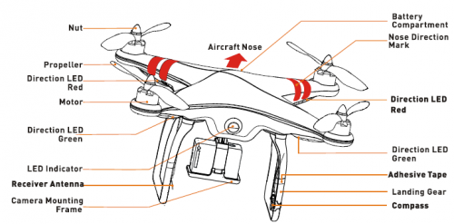
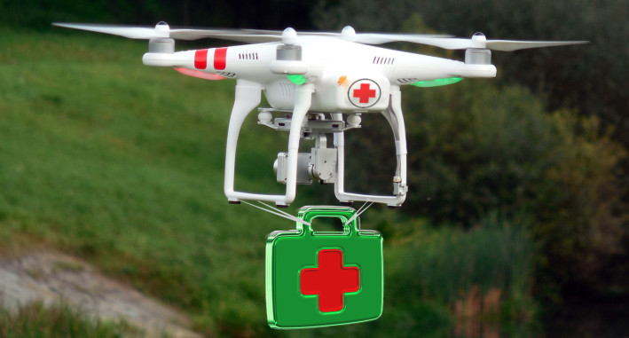
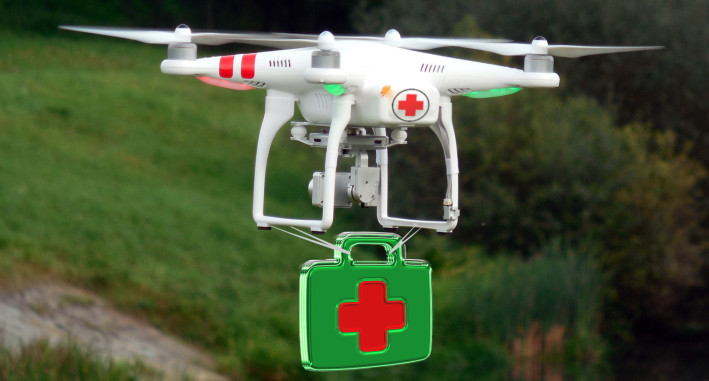

Anotomy of Drone:
- Why is the anatomy of a drone required to be known?:
It is crucial to know about the parts of a drone because it will help you to assemble the
drone perfectly.
The drone will fly safely and run smooth. You will be able to fulfill the purpose
of using the drone.
You will have the idea about the inspection of the various important components
of the drone. If the
drone is not functioning properly then also you will need the idea about the drone
anatomy to understand
what problem the drone is facing in its function. If there is any flying issue,
you w/ill be able to find out the
actual problem behind the issue.
Different important components in drone parts:
*Flight controller
*Motors
*Propellers
*Speed controllers
*Gimbal and the camera
*Battery
click here to know more about Different parts of drone.

Working of drone.
Up, Up and Away: How Do Drones Work?
Drones can be controlled remotely, often from a smartphone or tablet. Wireless connectivity lets pilots view the
drone and its surroundings from a birds-eye perspective. Users can also leverage apps to pre-program specific GPS
coordinates and create an automated flight path for the drone. Another handy wirelessly-enabled feature is the
ability to track battery charge in real time, an important consideration since drones use smaller batteries to keep
their weight low. Rotors

A drone relies on rotors for its vertical motion. Drones use their rotors—which consist of
a propeller attached to
a motor—to hover, meaning the downward thrust of the drone is
equal to the gravitational pull working against it;
climb, when pilots increase the speed
until the rotors produce an upward force greater than gravity; and descend,
when pilots
perform the opposite and decrease speed. To hover, two of a drone’s four rotors move
clockwise, while
the other two move counterclockwise, ensuring that the sideways mom-
entum of the drone remains balanced. To avoid
throwing its vertical motion off-kilter, the
other two rotors on the drone will increase their spin. The same principle
applies to movi-
ng forward and backwards—the rotors of the drone must apply thrust while making sure
the spin of the rotors keeps the drone balanced.
How the parts of a drone work?
• The standard propeller will be used on the standard engine that will be at the front of the drone.
• To cancel the motor torques this kind of contra-rotating propellers will be used.
• The motor mount will be attached to the motor to provide the combinations fitting which will be with the landing struts.
• For the drones that need higher ground clearance landing gear will be used.
• If you want to increase the stability of the drone, then you need to use the longer booms.
If you want to increase the maneuverability, then you need to use the shorter booms.
• GPS module has to be attached to the GPS receiver to provide the compass heading,
elevation, longitude, latitude and much other important information to the receiver to
control the drone properly.
• With the help of the battery monitor, the flight controller will get the level of the power
of the battery to fly the drone in the sky.
• In some of the drones, the use of antenna can be seen as well.
• With a Gimbal the Gimbal controller is required to be attached which will control the
Gimbal and the stabilization of the camera.
• With some of the camera and the help of the Gimbal, you will be able to capture the photograph.
If you can add up some of the other features, you will be able to get real-time footage as well.
Uses of drones
Remote sensing
Drones can carry sensing equipment to assist with any number of functions. Geological surveying, agriculture, archeology, and several other industries can benefit greatly from the myriad of sensors that can be packed into a drone. Here are just a few examples of how the agricultural industry, for example, uses aerial sensors:
• Drones can use Lidar to measure the height of crops. Lidar is a remote sensing technology that measures distance by illuminating an object with a laser (near-infrared or UV) and then measuring what is reflected back.
• Heat sensors detect the temperature of livestock, the presence of water, water temperature, and for surveillance and emergency response (if someone is injured in a remote field away from heavy equipment).
• Multi-spectral instruments can count plants (crop density), check the health of plants, and even assess water quality.
• Visual spectrum sensors make it possible to survey and map land.
• Biological sensors can be used to take air quality readings and check for the presence of specific micro-organisms or organic compounds.
Commercial aerial surveillance
When you hear surveillance, chances are good that you think about security cameras designed to catch lawbreakers. Or possibly spying and monitoring of your personal movements and actions. Here are just a few ways that aerial surveillance can be helpful:
• Farmers use drones to monitor livestock on vast spreads of land.
• Fire departments can use drones to track and map wild fires.
• Private companies can use drones to monitor their infrastructure such as pipelines, buildings, and so on.
• Using drones to inspect power lines, towers, tall structures like chimneys and roofs would save businesses vast amounts of money and would reduce liability exposure from having humans in harm’s way.
Commercial and motion picture filmmaking
In 2014, the Motion Picture Association, backed by seven companies, petitioned the FAA to allow the use of drones in video and filmmaking. Drones dramatically reduce the cost associated with gathering action or aerial footage that up until now would require expensive equipment like booms and dollies or even helicopters or other manned aircraft. In September of 2014, the FAA issued permits to six film studios for the use of drones in filmmaking. Drones are also being used to gather footage in sporting events because of their ability to maneuver into locations that cable-suspended cameras cannot reach. Most recently, drones were used to gather footage of the skiing and snowboarding events in the 2014 Sochi Winter Olympics.
Oil, gas, and mineral exploration
With the help of specific electromagnetic sensors, drones can be used to gather geological information to help geophysicists identify and better approximate the location and presence of minerals, oil, and natural gas.
Disaster relief
The milieu of sensors that can be packed into a drone can be used to help locate and save life in the midst of natural disasters. Drones can be used to gather and deliver medical samples, supplies, and medicine to remote or otherwise unreachable areas in a disaster zone. Drones can also use infrared sensors to detect humans by their heat signature which is helpful in search and rescue scenarios.
Real estate and construction
Drones have made it possible to survey land and gather information at job sites. Realtors, developers, and builders have also begun using drones to gather video and imagery for home and building inspections and marketing materials to assist the selling process.
Recreational use
Needless to say, drones can be extremely useful devices for a plethora of applications ranging from agriculture to national security. However, you can’t forget that drones are also really fun to use. The miracle of flight is something that has fascinated man for millennia, so it’s no wonder that hobby flight enthusiasts have been tinkering with flying machines since the late 1800s. The good news is that personal and hobby use of drones is perfectly legal in the United States. Recreational flying can be done anywhere but is best if done in open locations so that you can always see your aircraft. This is called line–of–sight flying. Attaching a camera to your drone is also a lot of fun for gathering beautiful imagery and video of the world around you.
 
